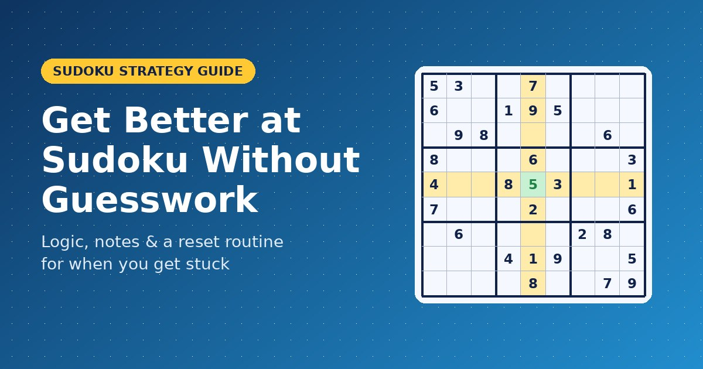
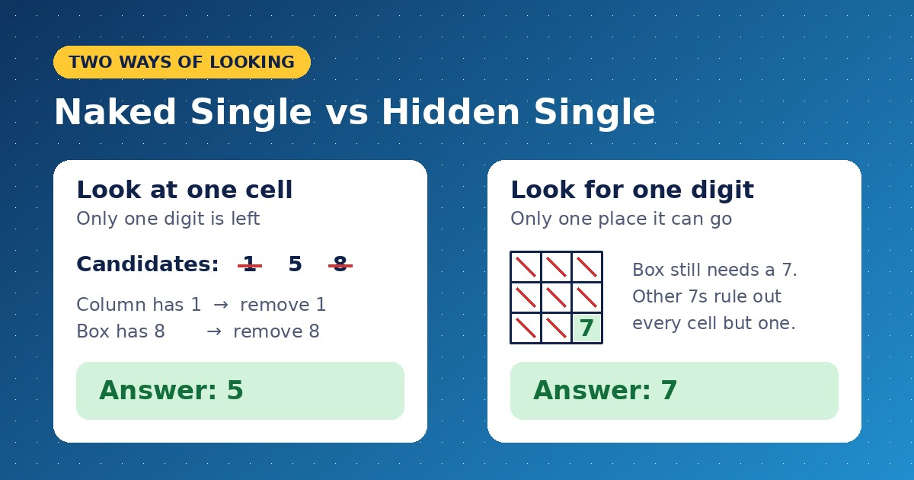
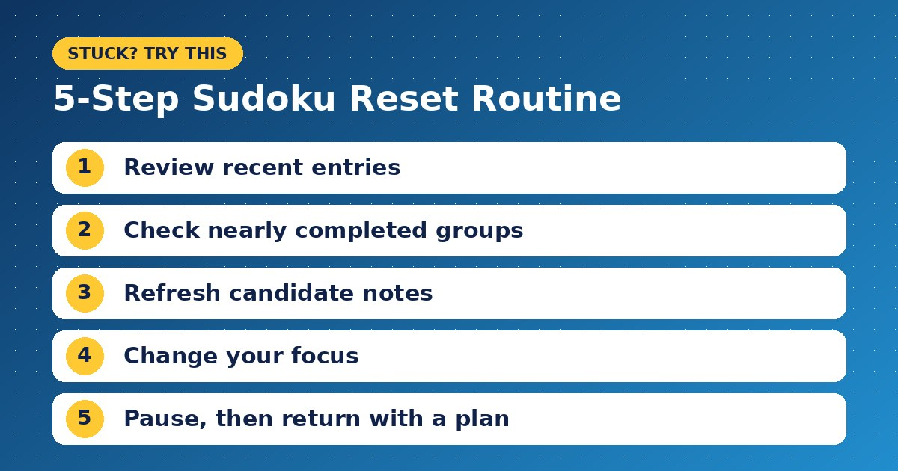

How to Get Better at Sudoku Without Relying on Guesswork

The most useful question in Sudoku is not “Which number should I try?” It is “What can I rule out?” That change in approach turns a board full of empty squares into a series of smaller, manageable decisions. Instead of hoping an entry works, you build a reason for placing it.
For readers exploring sudoku-it.org, this guide focuses on the thinking behind the puzzle: how to narrow possibilities, recognize useful clues, recover when you get stuck, and make practice more purposeful.
Understand the Relationship Between Cells
A classic Sudoku board contains 81 cells arranged in nine rows, nine columns, and nine three-by-three boxes. Each row, column, and box must contain the digits 1 through 9 without repetition. The numbers supplied at the beginning remain fixed. (sudoku.com)
Every empty cell therefore belongs to three overlapping groups. A number that works in its row may still be impossible because of its column or box.
Think of these groups as three separate checks. Before confirming an answer, all three must agree. This relationship explains why a number placed on one side of the board can affect possibilities somewhere else.
Separate a Possible Answer From a Proven Answer
One of the easiest mistakes is entering a number because nothing immediately rules it out. However, “allowed for now” and “definitely correct” mean different things.
Consider a hypothetical cell where both 4 and 6 remain possible. Placing 4 because it looks reasonable does not establish that 6 is wrong. You need another restriction before choosing between them.
A useful habit is to describe your reasoning in one sentence:
“This cell must be 6 because its row excludes every other digit except 4 and 6, and its column already contains 4.”
If your explanation is simply “I think it fits,” keep the entry as a possibility rather than a confirmed answer.
Switch Between Two Ways of Looking
When one approach stops producing answers, change the question you are asking.

Look at One Cell
Choose an empty cell and examine the digits already present in its row, column, and box. Eliminate those digits from consideration.
If only one remains, you have a single candidate, often called a naked single. The answer follows from excluding all eight alternatives. (sudokuoftheday.com)
For example, suppose a cell initially appears to allow 1, 5, and 8. Its column contains 1, while its box contains 8. That leaves 5.
Look for One Digit
Now reverse the process. Choose a digit missing from a row, column, or box and examine where it could go.
Imagine a box that still needs a 7. Several cells are empty, but existing 7s in the intersecting rows and columns rule out every location except one. That remaining cell must contain 7.
This is a hidden single: a digit has only one possible position within a group, even if that cell appears to allow other digits. (sudoku.com)
Make Your Notes Consistent
Candidate notes are small marks showing which digits remain possible. Their value depends on how clearly you maintain them.
For beginner practice, try recording every remaining candidate in the cells you are actively analyzing. Avoid mixing complete candidate lists with unexplained partial notes, because you may later mistake an omitted digit for an eliminated one.
After confirming an answer, revisit the empty cells sharing its row, column, and box. Remove the newly placed digit from their candidates.
If you use a digital interface, check how its notes behave. Some tools update candidates automatically; others leave that work to the player. Understand the behavior before relying on it.
Use a Reset Routine When Progress Stops
Getting stuck does not automatically mean you need an advanced technique. You may have overlooked a simple restriction or retained an outdated note.

Try this sequence:
- Review recent entries. Confirm that each followed from a clear deduction.
- Check nearly completed groups. A missing digit may now be obvious.
- Refresh candidate notes. Remove possibilities excluded by confirmed numbers.
- Change your focus. Switch from examining cells to tracking one digit.
- Pause if necessary. Return with a specific area to inspect.
If these checks produce nothing, the puzzle may require a technique you have not learned. That is a useful signal to seek an explanation, rather than repeatedly scanning without a plan.
Turn Hints Into Lessons
If your puzzle tool provides hints, use them to understand a move rather than merely reveal an answer.
Before requesting help, identify your difficulty. Are you unable to narrow a particular cell, or can you not find any promising area?
After viewing the hint, reconstruct the deduction yourself. Identify the relevant row, column, or box and explain why the alternatives fail. Then continue without immediately requesting another hint.
Measure Progress by Your Reasoning
For your next session, choose one goal: keep accurate notes, identify hidden singles, or explain every confirmed placement.
Finishing matters, but understanding how you reached the solution makes the practice more useful. Start with one defensible move, update the board carefully, and let the next decision follow from what you now know.